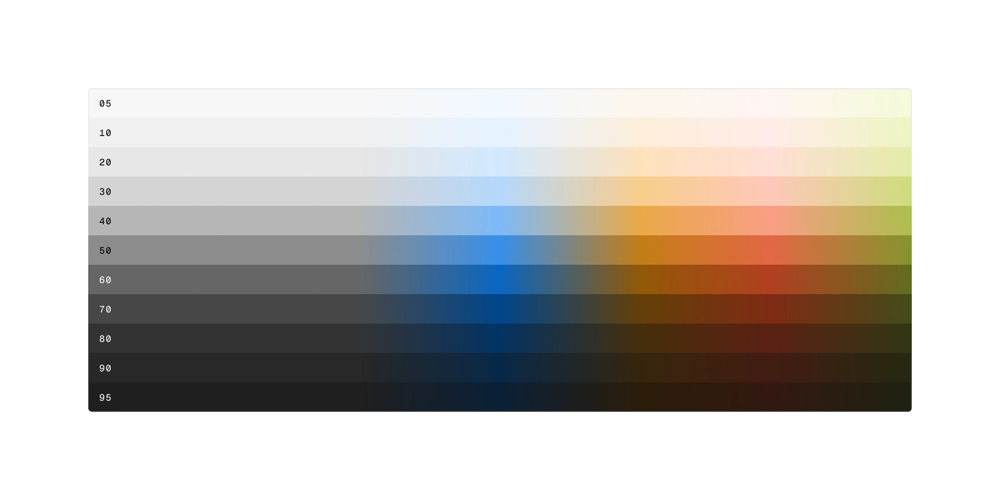
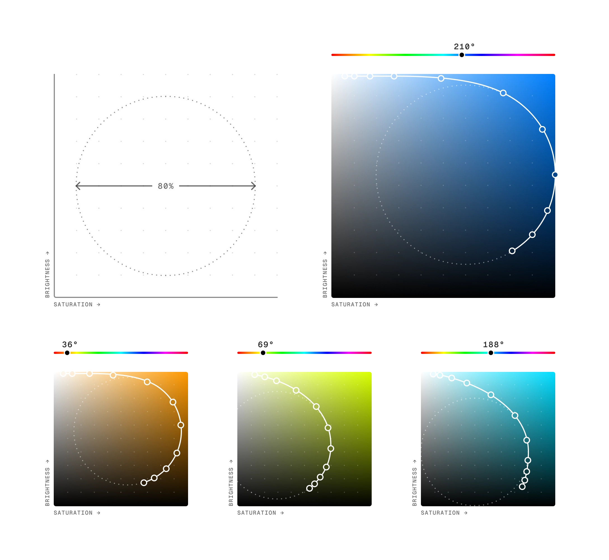
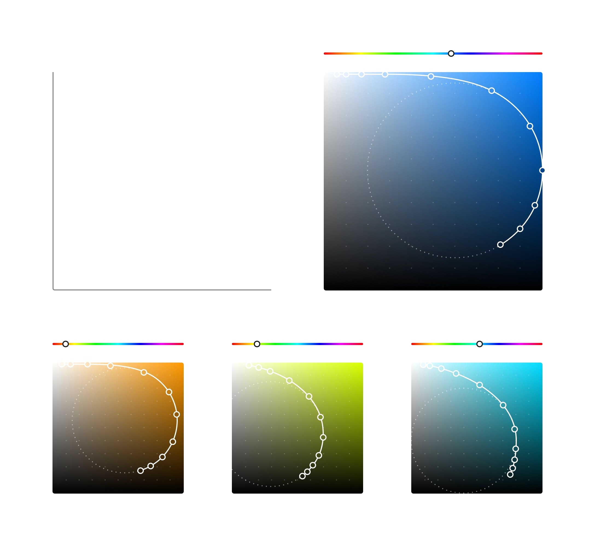
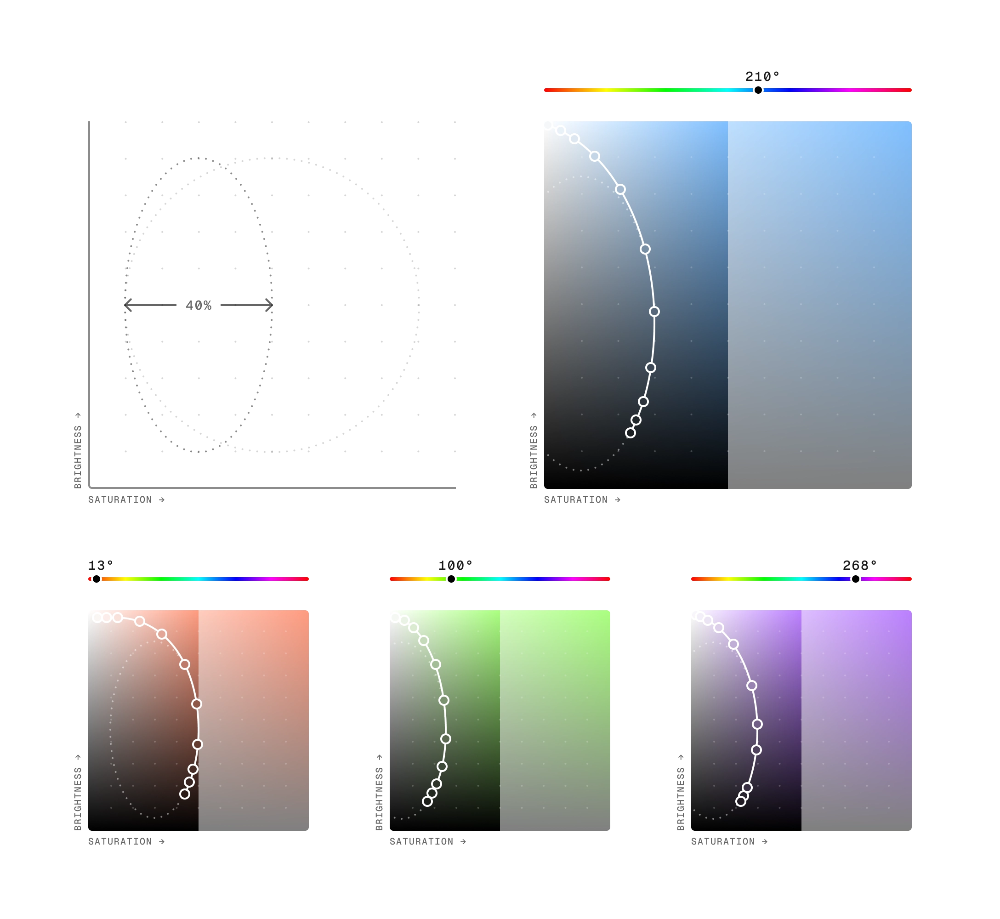
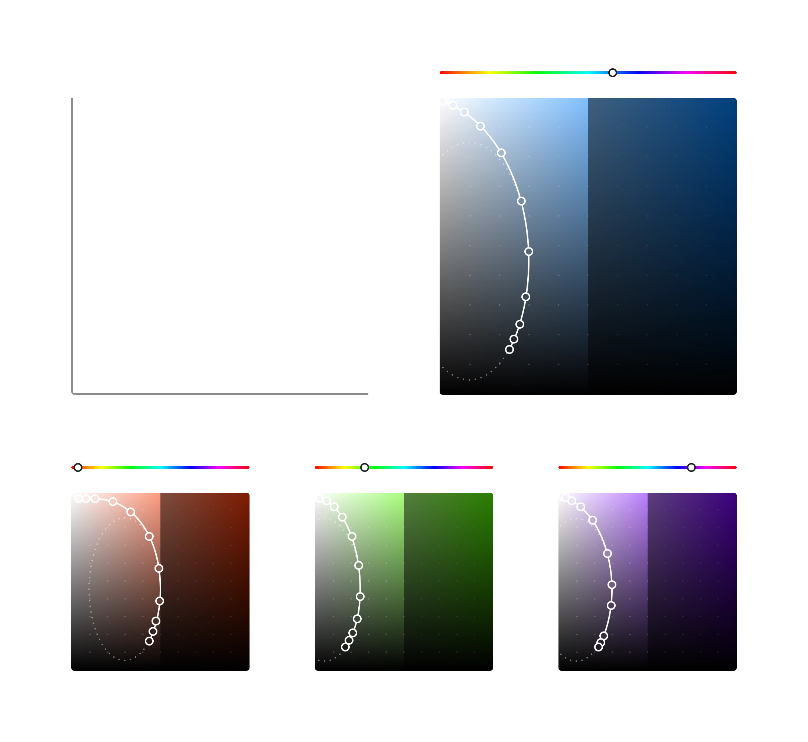
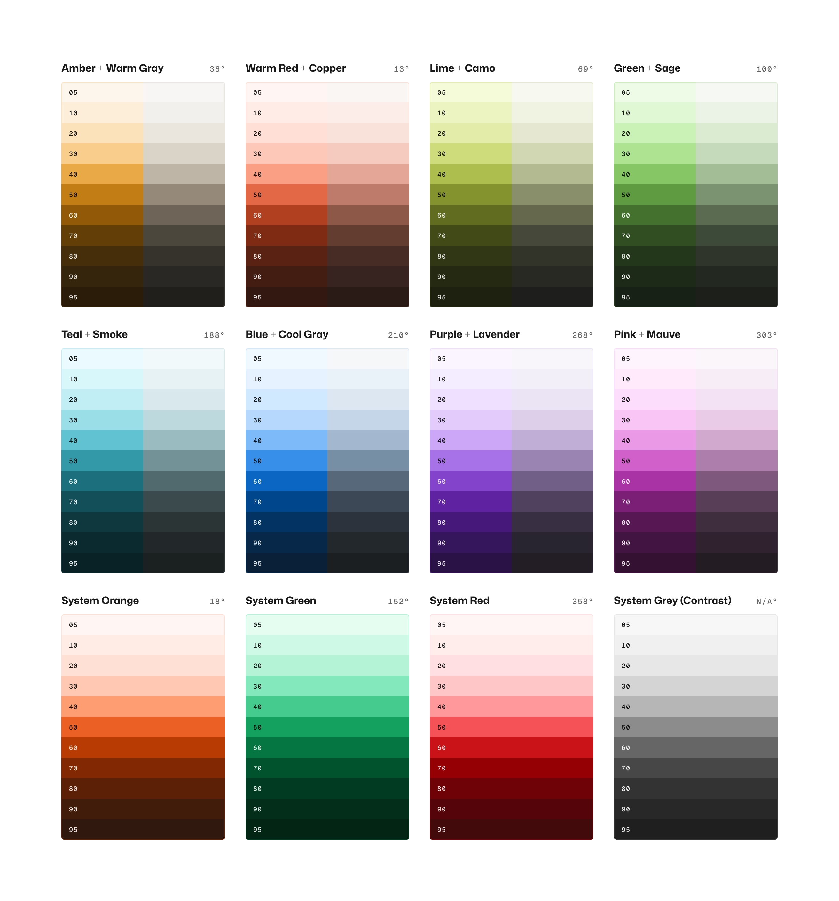
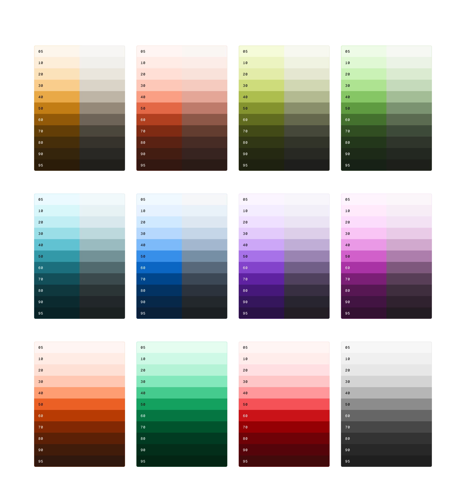

LinkedIn Mercado Design System
Systematic Color 2/X
Color ramp creation
Intro paragraph goes here, describing the content of the article.

Lessons from Art Deco
Art Deco’s color ramps were initially created back in 2015, long before dark mode or semantic tokens were industry standards. Sure, there were dark context design features across products, but they usually always existed within an overall light context. The colors lacked the flexibility that was required for a true dark mode experience, which became apparent when attempting to design anything in a fully dark context.
The method of generation used for the color palettes also resulted in a dramatic amount of hue shift in some color ramps (as much as 15°). This was mainly due to colors being chosen from an RGB color picker. Saturation was also inconsistent across colors within each ramp, which was mostly visible with adjacent lighter colors from the same ramp. Switching to the HSB color model for color generation would allow greater control over hue shifting, and scaling of brightness and saturation across all colors in each ramp.
What would carry over was the contrast row alignment that ensured that colors in the same number position in a ramp (e.g. Blue 7 and Green 7), had a 1:1 contrast ratio with each other, and a matching contrast ratio with any background or adjacent color. This approach was used to create a de facto color blueprint for the core system that guaranteed recommended color pairings would meet minimum contrast requirements as defined in the W3C WCAG guidelines.
The new generation process
The color ramps were created by plotting the colors on a brightness and saturation graph. The target contrast levels of each step were already determined thanks to the contrast ramp, and every color would share the same hue.
All that remained was to fit the colors to a curve that followed a guide circle with a diameter of 80% of the width and height of the graph area. Keeping this guide circle as large as possible allowed the curves to follow the guide circle for longer versus a smaller diameter circle, making the color relationships more consistent.
The influence for this approach went back to the days designing for dark contexts in Art Deco. Any saturated background colors tended to drown out the important foreground content colors in dark contexts, so we wanted to focus the saturation on the foreground colors (towards the top-right of the graph), and have the darker colors start to desaturate again.
The process starts by inspecting a brand color’s brightness and saturation values. Typically this was one of the strongest colors from the middle of the range, which sets the overall saturation level for the entire ramp. Using a color contrast analyzer, that color was then compared to its closest equivalent on the contrast ramp, and its brightness and saturation adjusted until there was a 1:1 contrast ratio between them.
That color is the plotted on the graph, and the guide circle moved to intersect it (or get as close as possible). A curve was then drawn from the top-left of the graph (close to white), following the guide circle. All other colors were then mapped to that curve.
Thankfully there was some flexibility in acceptable brightness and saturation levels, which allowed tweaking of the colors’ position on the graph while maintaining the same contrast ratio..


The saturation issue
As product UI design explorations progressed, it became apparent that the desaturation of the dark background colors still wasn’t producing the desired results. They were still too vivid and interfering with the impact of the foreground content.
Experiments with the shape of the guide circle tended to impact the top end saturation of the middle colors too much, so the decision was made to split the color ramps into vibrant and muted pairs.
This was done by limiting the saturation to a maximum of 50%, and halving the horizontal diameter of the guide circle (40% of the total field area).


The complete set
The result was a set of 16 brand color ramps (8 pairs consisting of a vibrant ramp and a muted ramp that share the same hue), plus 4 ramps exclusively for system feedback and data trends.
These ramps were intentionally kept simple, as previous attempts to use more descriptive names for specific hues were found to be confusing for some designers. Examples like True Blue, Citron, and Vermillion, gave way to Blue, Lime, and Warm Red.


With the brand and system color ramps complete, there was already a solid base for UI color exploration. However, to fully unlock the true flexibility of the entire system, a set of neutral opacity ramps were also developed that allow neutral UI elements such as text, icons, and borders, to harmonize with any given color application.